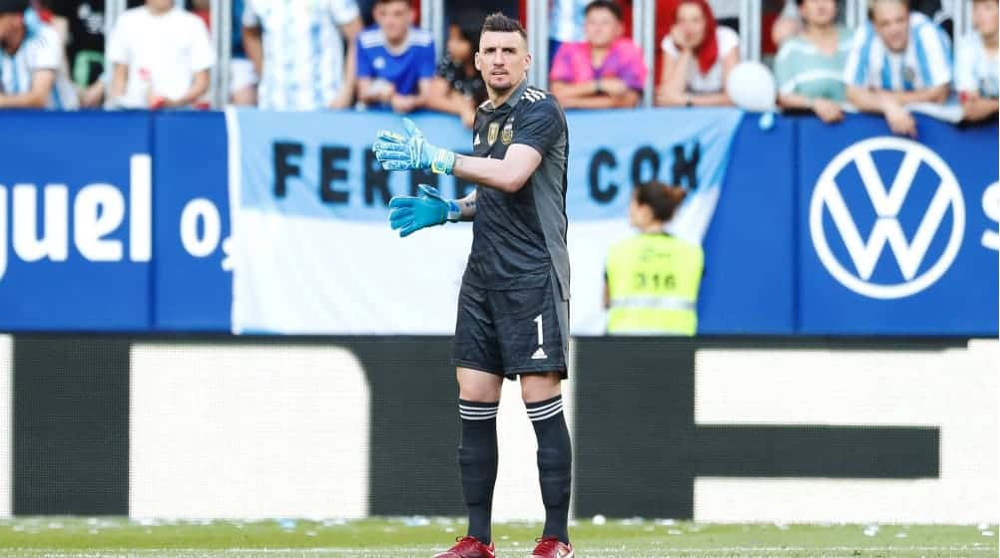

Franco Armani
Durante el año en que se realizo el mundial, se desempeño como arquero en River Plate (ARG).
- Numero de camiseta: 1
- Edad: 35 años
- Altura: 1.89 m
Geronimo Rulli
Durante el año en que se realizo el mundial, se desempeño como arquero en el Villareal (ESP).
- Numero de camiseta: 12
- Edad: 30 años
- Altura: 1.89 m
Emiliano Martinez
Durante el año en que se realizo el mundial, se desempeño como arquero en el Aston Villa (ENG).
- Numero de camiseta: 23
- Edad: 30 años
- Altura: 1.95 m